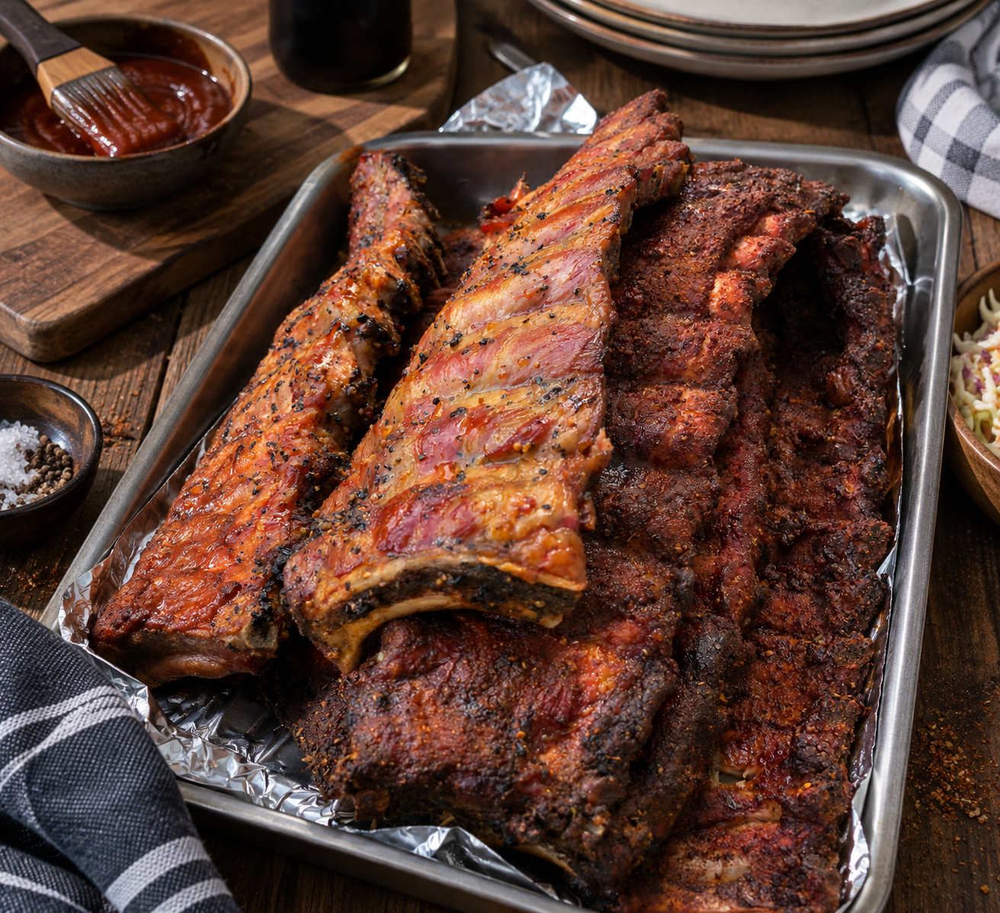

Unsere Klassiker
3-2-1 Ribs vom Grill

Zutaten
6 Stränge / ca. 3 kgSchweinerippchen, am besten Baby Back Ribs
200 mlCola oder Apfelsaft, alternativ Wasser
Nach BedarfBBQ-Sauce zum Bestreichen, z. B. Juli's BBQ Sauce
Magic Dust Rub
6 ELPaprikapulver, edelsüß
3 ELBrauner Zucker
1½ ELSalz
1½ ELSchwarzer Pfeffer
1½ ELKnoblauchgranulat
1½ ELZwiebelgranulat
1½ TLSenfpulver
1½ TLKreuzkümmel
1 TLCayennepfeffer
Das brauchst du
- Grill mit DeckelMit indirekter Grillzone
- GrillthermometerZum Kontrollieren der Garraumtemperatur
- RäucherholzZum Beispiel Kirsche
- Form mit Rost & DeckelHitzebeständig und dicht schließend
- GrillpinselZum Bestreichen mit BBQ-Sauce
- BrikettsFür den Kugelgrill: ausreichend für ca. 6 Stunden
Zubereitung
- Die Silberhaut auf der Knochenseite mit einem Löffelstiel lösen, mit Küchenpapier greifen und abziehen. Alle Zutaten für den Magic Dust Rub gründlich vermischen. Die sechs Rippchenstränge beidseitig gleichmäßig damit einreiben. Abgedeckt idealerweise 1–2 Stunden, gerne auch über Nacht, im Kühlschrank ziehen lassen.
- Den Grill für indirekte Hitze auf etwa 125–130 °C einregeln. Beim Kugelgrill Briketts als zusammenhängenden Ring mit einer Lücke anordnen und an einem Ende mit durchgeglühten Briketts starten. Räucherholz im Anfangsbereich verteilen. Die Temperatur über die Luftzufuhr regeln und mit einem Thermometer kontrollieren.
- 3 Stunden räuchern: Rippchen mit etwas Abstand in die indirekte Zone legen oder in einen geeigneten Rippchenhalter stellen. Bei geschlossenem Deckel etwa drei Stunden räuchern.
- 2 Stunden dämpfen: Die Flüssigkeit in die Form gießen. Rippchen auf dem Rost darüber platzieren, sodass sie nicht in der Flüssigkeit liegen. Dicht abdecken und bei 130–140 °C indirekt etwa zwei Stunden dämpfen. Den Deckel anschließend vorsichtig öffnen: Heißer Dampf entweicht.
- Etwa 1 Stunde glasieren: BBQ-Sauce leicht erwärmen. Die inzwischen sehr zarten Rippchen vorsichtig aus der Form auf den indirekten Grillbereich legen und dünn bestreichen. Bei geschlossenem Deckel zunächst 15–20 Minuten anziehen lassen, nach Wunsch nochmals bestreichen und bis zu etwa einer Stunde fertig garen. Direkte Flammen vermeiden, damit die Sauce nicht verbrennt.
- Vorsichtig vom Grill nehmen und zwischen den Knochen portionieren. Die Zeiten sind Richtwerte: Dünnere Rippchen können früher weich sein. Fertig sind sie, wenn sich das Fleisch leicht vom Knochen lösen lässt.